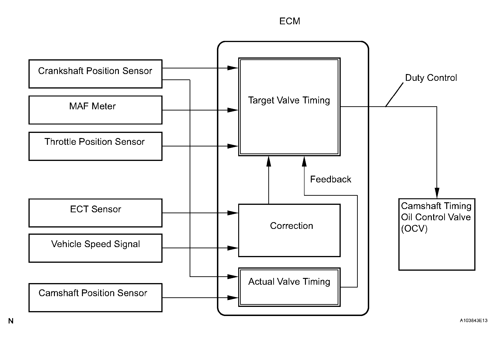

DTC P0010 Camshaft Position "A" Actuator Circuit (Bank 1): Description
The Variable Valve Timing (VVT) system includes the ECM, Oil Control Valve (OCV) and VVT controller.
The ECM sends a target duty-cycle control signal to the OCV. This control signal regulates the oil pressure supplied to the VVT controller. Camshaft timing control is performed according to engine operating conditions such as the intake air volume, throttle valve position and engine coolant temperature.
The ECM controls the OCV based on the signals transmitted by several sensors. The VVT controller regulates the intake camshaft angle using oil pressure through the OCV. As a result, the relative positions of the camshaft and crankshaft are optimized, the engine torque and fuel economy improve, and the exhaust emissions decrease under overall driving conditions. The ECM detects the actual intake valve timing using signals from the camshaft and crankshaft position sensors, and performs feedback control.
This is how the target intake valve timing is verified by the ECM.

Courtesy of © TOYOTA, LICENSE AGREEMENT TMS1002| DTC No. | DTC Detection Condition | Trouble Area |
|---|---|---|
| P0010 | Open or short in Oil Control Valve (OCV) circuit (1 trip detection logic) |
|